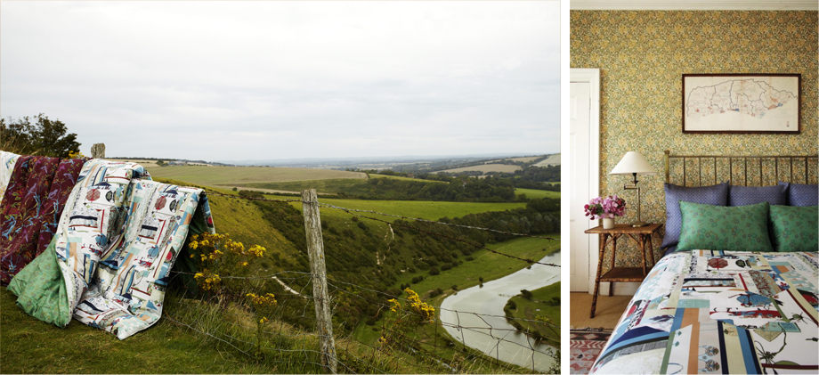

모노콜렉숀의 장응복 대표와 Collaboration하여 탄생한 프리미엄 침구 브랜드 복(bogg)이 이번 F/W 뉴 컬렉션을 위해 영국으로의 촬영을 다녀왔다.
2011년 봄, 폭발적인 사랑을 받으며 론칭한 이후 매 시즌 획기적으로 새로운 패치워크 패턴을 선보이며 특유의 스타일을 완성해온 bogg. 이번 가을에는 만화경처럼 신비로운 육각조각잇기 패턴을 적용한 ‘잉글리시 가든(English Garden)’, bogg의 가장 사랑받는 패턴 중 하나인 꽃신을 모티프로 한 꽃신조각잇기 패턴을 적용한 ‘스위트 블라썸(Sweet Blossom)’, 두 가지 컬렉션을 선보인다.
특유의 패치워크 패턴으로 사랑받아온 복의 이번 가을 컬렉션 ‘잉글리시 가든’은 사방으로 연결되는 육각형의 모듈 안에 모노콜렉션의 히스토리가 담긴 다양한 문양들이 또 다시 패치워크되어 있다. 전체적으로는 마치 잔잔한 스트라이프 패턴이 육각 모듈과 만난 것 같아 보이기도 한다. 그래서 모노콜렉션 고유의 패턴을 지니고 있으나 극도로 현대적인 분위기를 자아내고 있다. 얼핏 지오매트릭한 패턴 속에 숨은 듯 자리잡은 전통 모티프들, 그리고 은은한 로즈 핑크 컬러와 서정적인 트와일라이트 블루 컬러가 이 이 가을, 침실의 분위기를 우아하면서도 모던하게, 동시에 한국적인 색채마저 느낄 수 있게 만들어 준다.
bogg 침구에 적용된 다양한 패턴들 중 하나인 ‘꽃신’ 모티프는 bogg 침구 애호가들이 가장 사랑하는 패턴 중의 하나다. 이 ‘꽃신’이 새로운 패치워크 방법을 통해 전혀 새로운 ‘꽃신조각잇기’ 패턴으로 거듭나며 올 가을 ‘스위트 블라썸’ 컬렉션에 적용되었다. 은은한 핑크 톤의 꽃신 모티프와 강렬한 레드와 그린 컬러의 컬러 블로킹이 침실에 강렬한 개성을 전할 것이다.
bogg의 이번 가을 컬렉션이 더욱 특별해 보이는 것은 영국의 귀족 저택과 루이스 지역의 사랑스러운 전원 풍경이 촬영의 배경이 되었기 때문이다. bogg 촬영팀이 찾은 루이스 지역은 가을이 완연히 찾아 왔다. 밀밭은 황금빛으로 익어 이미 추수를 시작하고 있었고, 루이스 지역을 굽어 보고 있는 언덕은 가을의 서정성 깊은 바람을 품고 있었다. 가을이 충만한 언덕과 들녘에 연출된 bogg 침구는 가을의 금빛 햇살과 우수 머금은 바람과 만나 영국의 운치를 가득 전하고 있다.
이어진 영국 귀족 부인인 Mrs. Renton의 전통 어린 저택에서의 촬영. 영국 전통 분위기가 물씬 풍기는 이곳에서의 촬영은 bogg의 매력이 한결 돋보이는 순간이었다. 햇살 환하게 드는 마스터 베드룸과 윌리엄 모리슨 벽지로 마감된 영국풍 베드룸, 그리고 동양풍이 살짝 가미된 게스트 베드룸에 연출된 bogg 침구는 한국적이면서도 유럽의 이국적인 분위기를, 또 모던한 가운데 사랑스러움과 여성스러움을 동시에 자아내고 있었다.
또한 정원과 마구간 등 이색적인 촬영 진행은 기존 침구 브랜드의 촬영 스타일을 뛰어 넘은 독특한 연출로 bogg 침구의 색다른 매력을 느껴볼 수 있는 기회가 되었다. bogg 침구는 우아한 귀족의 저택은 물론 우리 집 침실에도 충분히 유럽풍의 멋진 분위기를 선사할 것이 분명하다.
bogg의 2012년 가을 컬렉션은 또 한번의 진보를 했다. 몸에 바로 닿는 침구라는 특성상 늘 소재선택에 깊은 고민을 해왔던 bogg. 반드시 천연 소재여야 하고 몸에 닿는 느낌은 물론, 시각적인 효과와 내구성까지 꼼꼼히 따져보던 bogg이 결정한 소재는 바로 수피마 코튼이다. 수피마 코튼은 미국 면화 중 3% 정도만 생산되는 프리미엄 면화로, 미국 남서부지역에서만 재배된 모근(毛筋) 35mm이상의 우량한 초장 피마 코튼(Pima Cotton)만을 엄선하여 미국의 수피마 협회(Supima association)에서 그 품질을 보장한 피마 코튼 브랜드다. 피마 코튼은 섬유가 가늘고 길며, 안정된 강도와 탄력으로 실크 같은 광택과 부드러운 감촉이 일반 면보다 매우 우수한데, 특히 치밀한 조직감으로 표면에 보풀이 이는 현상이 일반 면/모보다 현저히 적으며, 염색성이 좋아 컬러가 선명하고, 오랜 세탁에도 견고한 것이 특징이다. 면을 뛰어넘은 면이라 불릴 정도로 그 고품격의 소재성을 인정받고 있는 수피마 코튼은 진정한 프리미엄을 추구하는 bogg 브랜드와 함께 침실의 품위를 한껏 올려줄 것이다.
그 어떤 가구보다 침실의 분위기를 결정짓는 중요한 역할을 하는 침구. 프리미엄 침구 브랜드 bogg의 2012년 F/W 뉴 컬렉션은 좋은 소재와 감각적인 디자인으로 가을 침실 분위기를 쉽고도 확연히 바꿔주기에 충분하다. 올 가을, bogg 침구와 함께 신비롭고도 여성스러운, 혹은 모던한 가을 감성을 즐겨보자.
|